S14 / SKENARIO
Guardrails, audit, dan biaya
Bandingkan keputusan allow dan deny di audit/tools.log. Dashboard enterprise perlu izin organisasi.
Durasi 8 menit · estimasi latihan
Cerita tim
Dev ingin pakai agent otomatis. CISO menolak: "Bagaimana kalau agent push ke main atau baca secret?" Tidak ada jawaban konkret, pilot dibatalkan. Di tempat lain, tagihan AI credit naik 3× karena workflow agent jalan tiap commit tanpa pemilik.
Yang disiapkan di repo
P14 — tidak ada hooks; agent bisa jalankan apa saja.
Lihat file dan kontrak
Sinyal uji masuk → Keputusan deny tanpa bocor argumen
Pilihan solusi
.github/hooks/guardrails.json (blok rm -rf, curl | sh, akses .env; log tiap tool call), safe-outputs & permissions minimal di gh-aw, enterprise policy, usage/credits dashboard.

Baca alur sebagai teks
- Tool call → masuk ke → Hook preToolUse
- Hook preToolUse → mengizinkan bila aman → Tool
- Hook preToolUse → menolak contoh spesifik → Deny
- Hook preToolUse → mencatat metadata ke → Audit log
- Izin platform → membatasi → Tool
Langkah demo
- Baca issue latihan dan kriteria selesai.
- Gunakan prompt atau perintah berikut. Prompt atau perintah
npm test -- tests/unit/guard.test.js - Periksa hasil: Bandingkan keputusan allow dan deny di audit/tools.log. Dashboard enterprise perlu izin organisasi.
Before / After
Belum di-capture · S14-before.png
Belum di-capture · S14-after.png
- Baseline
- Sinyal uji masuk
- Target setelah latihan
- Keputusan deny tanpa bocor argumen
- Verifikasi
- Bandingkan keputusan allow dan deny di audit/tools.log. Dashboard enterprise perlu izin organisasi.
Manfaat untuk tim
- Tim bisa menunjukkan kontrol konkret ke CISO; biaya terpantau; adopsi aman secara kepatuhan dan finansial.
Bukti yang bisa diperiksa
- Issue GitHub · S14
S14-01-hooks-file.png· belum di-captureS14-02-usage.png· belum di-captureS14-03-gh-aw-permissions.png· belum di-capture
Screenshot dan metrik yang tidak tersedia tidak dianggap sebagai hasil live.
Ulangi latihan
Jalankan dari root repo latihan. Reset hanya menyentuh worktree lokal yang bersih.
npm run reset